Banking interfaces
The challenge
I’ve been developing intuitive interfaces for both the bank managers and clients at Novobanco since 2023. I work both in user flows and in developing library components.
What I did
Throughout these years I’ve taken on end-to-end projects in multiple departments, including Investments, Corporate Credit, Transfers and Insurance.
Accessibility
In 2024 I took on the job of visually adapting all existing components and systems to comply with WCAG 2.1 AA guidelines, and of supervising these updates across all journeys.
More extensive product design case studies on Behance (opens in a new tab)
Investment platform flows
Mobile and desktop flows for the bank’s investment products, where clients follow their portfolios and trade. I designed user flows, custom components and built prototypes for all products.

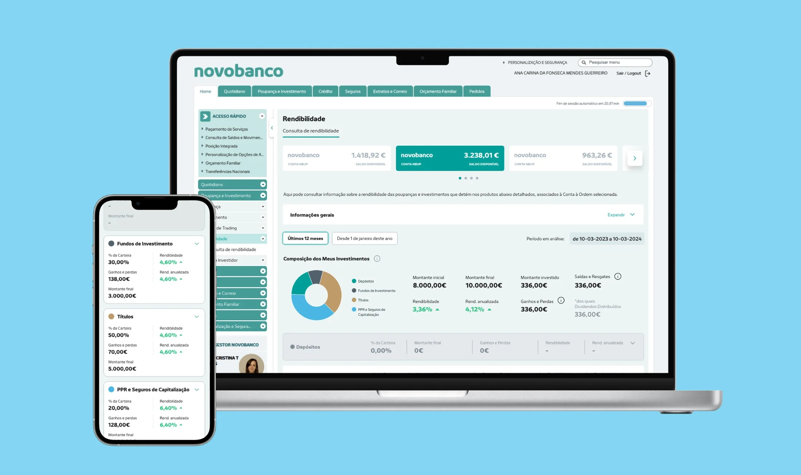
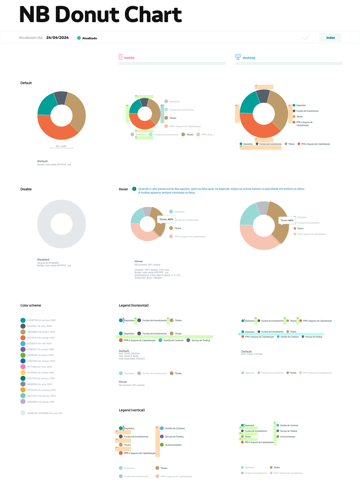
Corporate credit platform
Plataforma de Informação de Clientes (PIC): a client intelligence dashboard for the bank’s managers, which I took on solo as a designer. More than 400 managers use it, and it saves each of them an average of four hours a day. It won Bronze for Best Business Banking Innovation at the Qorus-Infosys Finacle Banking Innovation Awards 2025, among 324 innovations from 130 financial institutions in 53 countries. This was a very limited project visually, as it was developed in Power BI with all its constraints, which made it an extra challenge I really enjoyed working around.
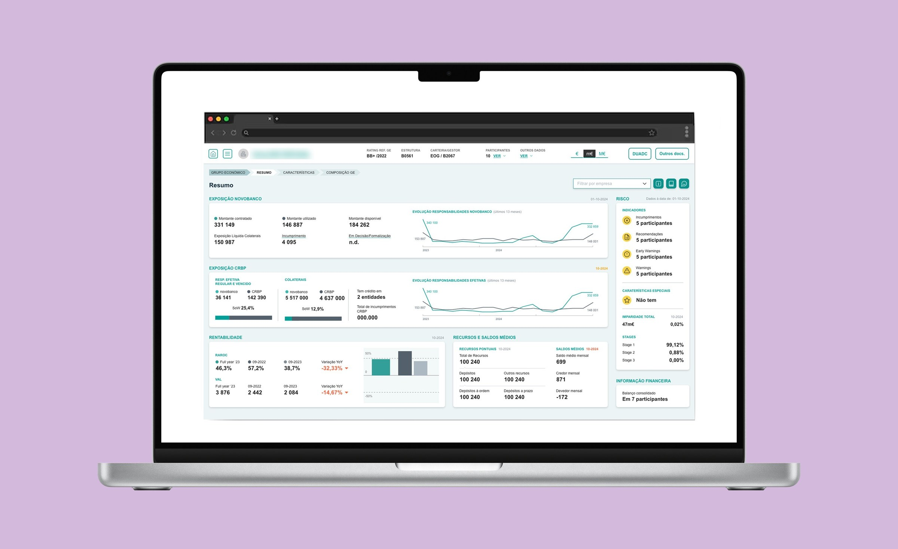
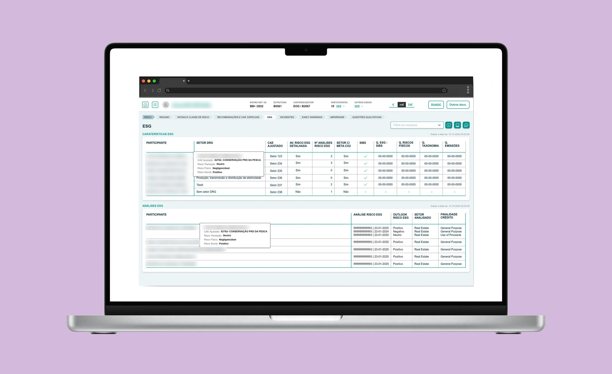
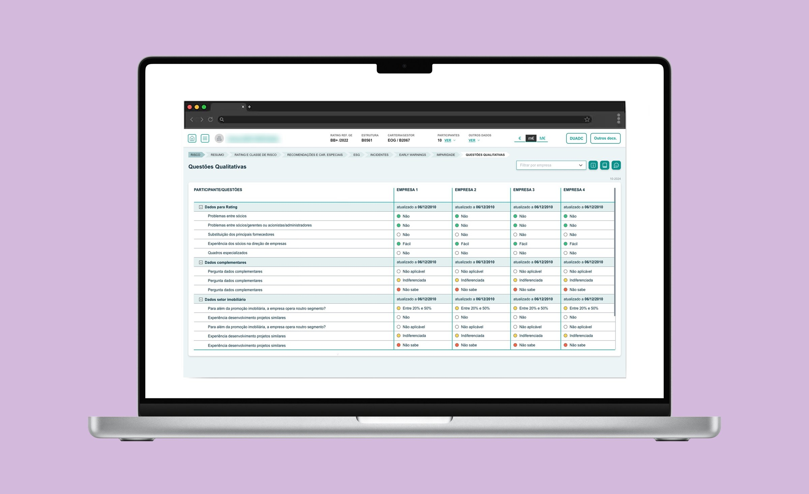
Accessibility work
Side by sides of the same piece before and after my intervention for visual WCAG compliance. For colour, I checked the contrast of every swatch against the bank’s main colours, developed a system to identify what was compliant in our library, and integrated the new colours from a rebrand, redoing the swatch scales.
Drag the bar to compare before and after ↔
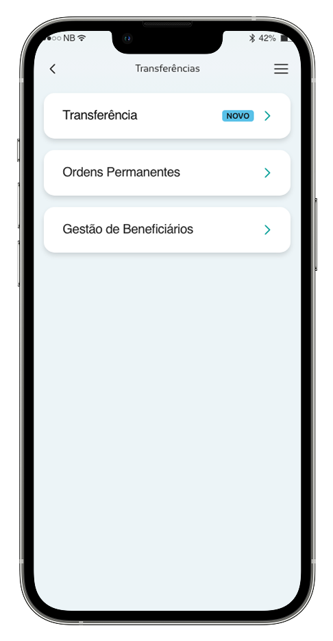
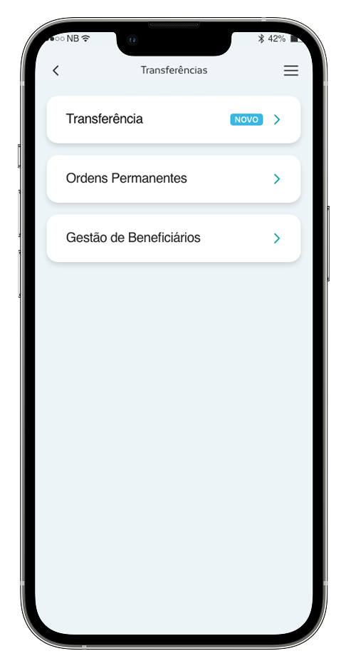
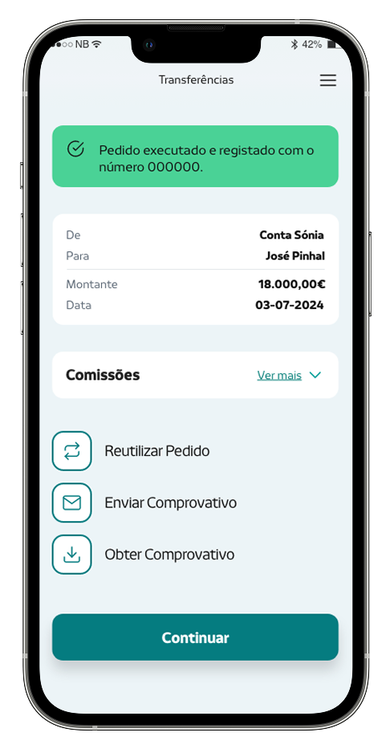
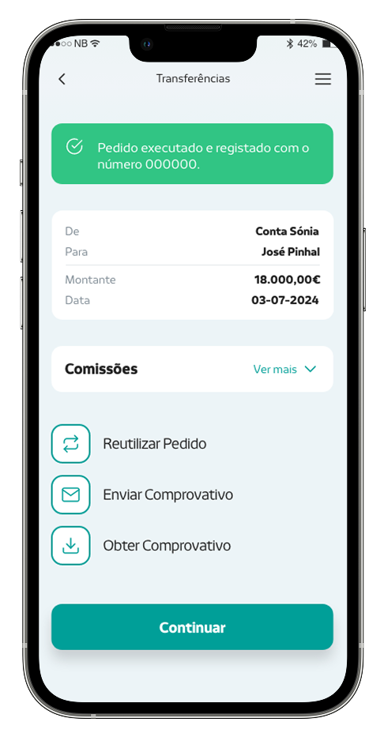
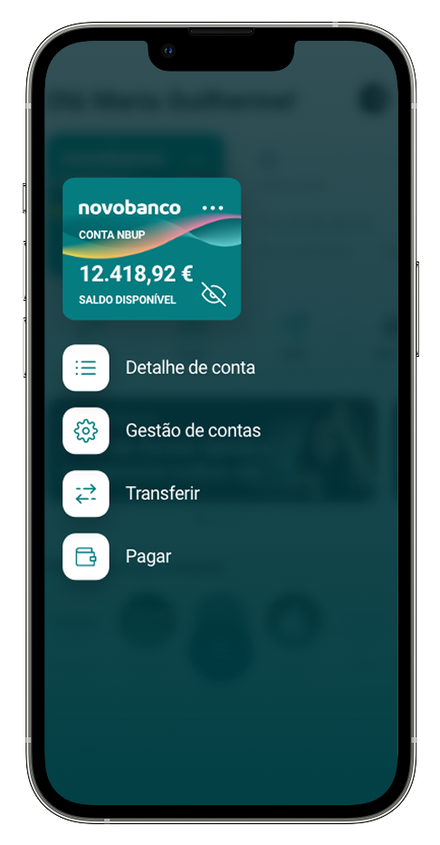
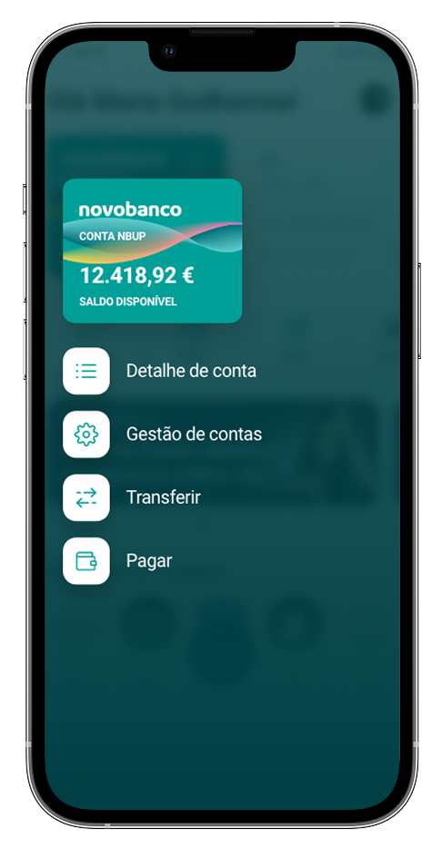